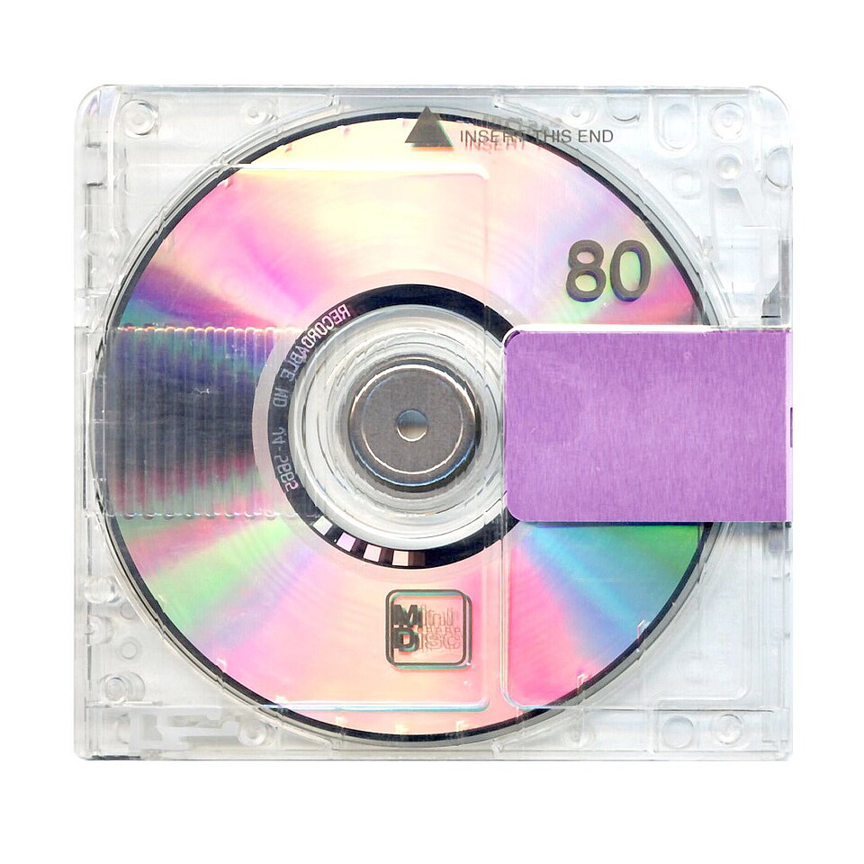
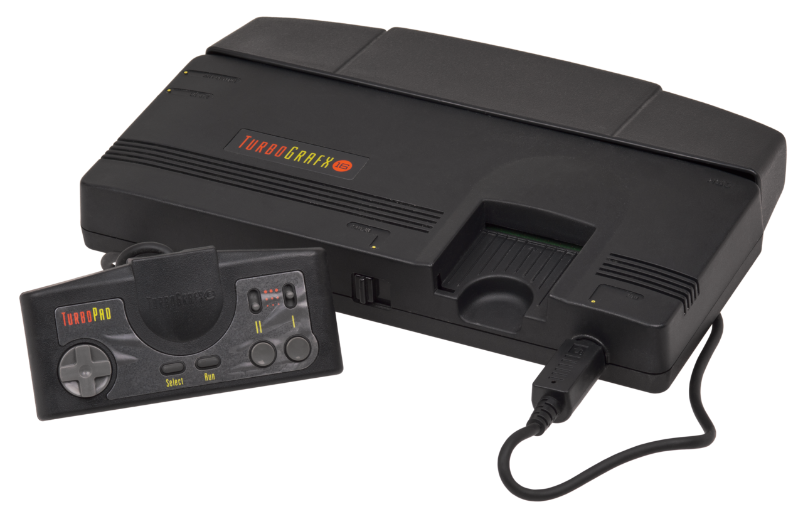
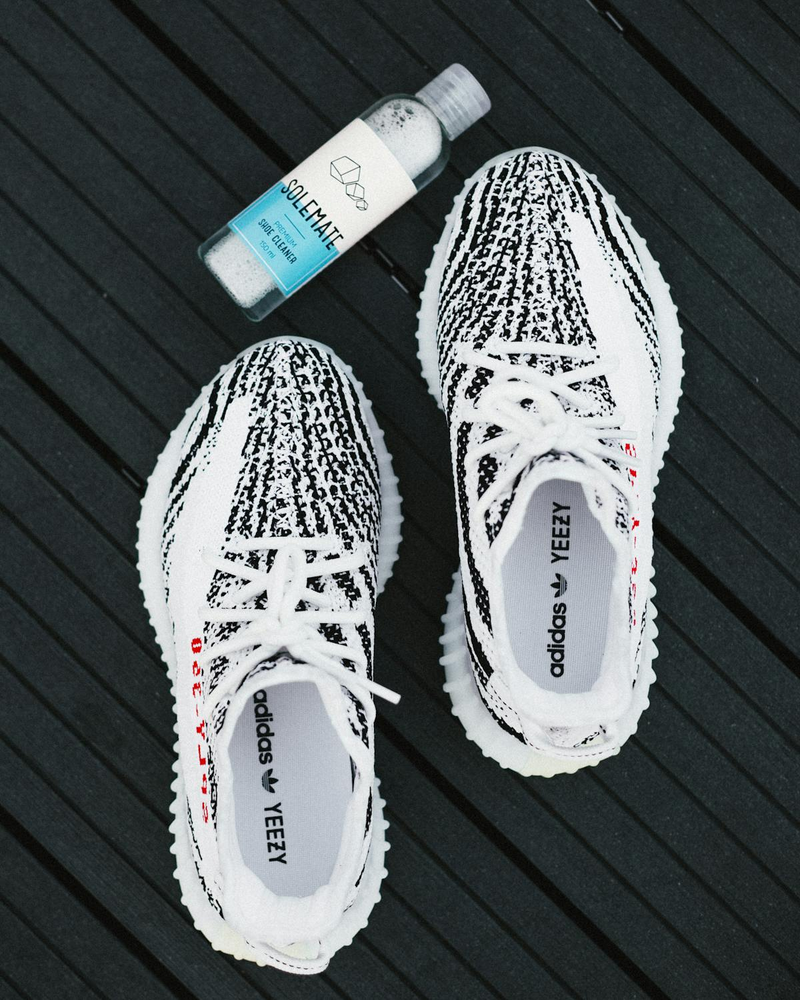

Music
Music
Artist and Producer
Kanye helped popularize soulful sample-based production in the early 2000s, then later pushed hip-hop toward electronic sounds, Auto-Tune, gospel, industrial music, and stadium-sized album experiences.
A fan-made archive covering Ye's biography, major album eras, unreleased projects, Yeezy fashion, popular sneaker models, creative influence, and cultural legacy.
Kanye West, also known as Ye, is an American rapper, producer, fashion designer, and cultural figure. He first became known as a producer, especially through his work with Jay-Z, before becoming one of the most important solo artists in hip-hop. What makes Kanye different is that he did not stay in one lane. He changed his sound, image, fashion, stage design, and business ideas many times throughout his career.
Music
Kanye helped popularize soulful sample-based production in the early 2000s, then later pushed hip-hop toward electronic sounds, Auto-Tune, gospel, industrial music, and stadium-sized album experiences.
 Fashion
Fashion
Through Yeezy, Kanye helped make earth tones, oversized fits, futuristic footwear, and minimalist streetwear a major part of modern fashion.
 Culture
Culture
His influence goes beyond music. Album rollouts, listening parties, sneaker drops, fashion shows, and visual branding became part of his artistic identity.
Each era has a different sound and look. This timeline shows how Kanye's music, fashion, and public image changed together.
Click each card for a deeper capsule. The page focuses on why each album matters, not just when it came out.
The unreleased section is what makes a Kanye fan page feel like a fan archive. The key is separating public facts from fan theories so the page stays credible.

YandhiYandhi was publicly expected in 2018, delayed more than once, and never released in its original form. Some ideas and songs from that period later changed direction or appeared in later Kanye projects.
Donda 2 was tied to the Stem Player rather than a normal streaming rollout. It is best described as unfinished, mutable, and unusual in how it challenged the normal album-release model.

TurboGrafx16Kanye announced TurboGrafx16 in 2016, named after the video game console, but no official stable public version became a standard released album.
 Fan favorite
Fan favorite
Many fans imagine Yandhi as the bridge between the chaotic 2018 Ye era and the religious direction of Jesus Is King. That makes it feel like an alternate timeline in his discography.
 Leaks
Leaks
Unreleased Kanye songs circulate heavily in fan communities, which makes fans feel like they are watching drafts, sketches, and abandoned ideas rather than only finished albums.
 Careful wording
Careful wording
For unreleased albums, use words like reported, leaked, rumored, fan-favorite, or early version. Avoid presenting fan-made tracklists as official.
Design idea
Put confirmed facts on the left and fan theories on the right. This lets visitors enjoy the mystery without confusing speculation with verified history.
 Interactive
Interactive
Ask: Which unreleased project would you want officially finished? Options: Yandhi, TurboGrafx16, Good Ass Job, So Help Me God, Donda 2.
Tone
Use darker colors, blurred cards, and labels like Draft, Lost Era, Fan Myth, and Alternate Timeline to make this section visually different.
The Yeezy story is best shown as three chapters: Nike proved the concept, adidas made it massive, and Gap tried to bring the design language to everyday basics.
 Nike chapter
Nike chapter
Before adidas, Kanye's Nike Air Yeezy proved that a non-athlete could create real sneaker hysteria. This matters because it changed expectations for what a musician's product collaboration could be.

adidas chapterThe adidas era turned Yeezy into a full footwear identity: knit runners, chunky sneakers, minimal slides, and alien-looking foam shoes. The brand did not rely on one silhouette.
Yeezy Gap was built around accessible basics, hoodies, jackets, and muted colors. Kanye's public idea of extremely affordable basics, including the $20 clothing dream, works best as an ambition rather than the actual price of most major pieces.
 Design language
Design language
Yeezy's look is easy to recognize: beige, gray, brown, black, sculptural shoes, minimal logos, oversized fits, and clothing that feels like a uniform from a future city.
These four models show why Yeezy became more than artist merch. The images rotate automatically, and you can click a sneaker to change the featured model.
The 350 V2 is probably the most recognizable Yeezy sneaker. Its knit upper, stripe detail, Boost cushioning, and everyday shape made it a casual uniform piece.
Kanye is influential because his impact is not limited to one song or one album. His influence is a model: an artist can build a whole creative universe across music, fashion, visuals, product design, and public events.
His early soul-sample style helped define a major 2000s sound. Later, he moved into orchestral, electronic, industrial, gospel, and minimal production approaches.
808s & Heartbreak helped make Auto-Tuned emotion, heartbreak, and melodic rap feel mainstream. That influence shows up in later artists such as Drake, Travis Scott, Future, Juice WRLD, and many melodic rap/R&B performers.
From elaborate listening parties to public revisions, Kanye helped make the rollout part of the art. The Life of Pablo and Donda are key examples.
Yeezy showed that a musician-led footwear line could compete with major sneaker franchises and change mainstream taste.
Each era has a visual identity: Graduation is colorful and futuristic, Yeezus is industrial and harsh, Pablo is merch-heavy and fragmented, and Donda is dark, masked, and stadium-sized.
A serious fan page should acknowledge both sides: his artistic impact is enormous, but his public controversies, offensive statements, and damaged business relationships are also part of the story.